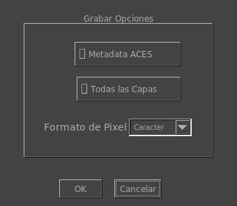

Las Opciones de Grabar Archivos de ImageMagick

Las opciones de Grabar Archivos de ImageMagick te permite seleccionar opciones de como mrViewer graba los formatos soportados por ImageMagick. Los formatos más comunes serían PNG, TIFF y Photoshop PSD. La ventana aparece cuando intentas grabar un formato soportado por image magick (determinado por su extensión).
Podés grabar los Metadatos de ACESclip (todas las transformaciones de CTL) a un archivo similarmente nombrado como tu archivo de imagemagick. Este archivo será leído automáticamente una vez que cargues el archivo o la secuencia de ImageMagick.
Algunos formatos de ImageMagick suportan multiples capas y seleccionar grabar todas las capas te permitirá grabar todas las capas de la imagen cargada. Actualmente los formatos que soportan multiples capas son TIFF, MIFF y PSD. Si seleccionas un formato que no soporta capas como por ejemplo PNG, usted obtendrá imágenes adicionales grabadas por cada capa.
Aquí puedes también seleccionar la profundidad del pixel, que puede ser caracter, integro corto, coma flotante o doble. Mientras que no todos los formatos soportan todas las profundidades, caracter y corto son bastante comunes. El valor de gamma, como se usa en OpenEXR por ejemplo, será fundido en la imagen.